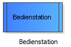

Eine oder mehrere Bedienstationen stellen in den meisten Fällen den Kern eines Simulationsmodells dar. An den Bedienstationen existieren die Warteschlangen und werden die Kunden durch die Bediener bedient. (Wieder muss es sich weder bei den "Kunden" noch bei den "Bedienern" um Menschen handeln. Es können auch Werkstücke als Kunden eintreffen, die durch Maschinen bedient werden.)
Um ein Element - in diesem Fall eine Bedienstation - in dem Modell hinzuzufügen, ziehen Sie diese mit gedrückter linker Maustaste auf die Zeichenfläche.
Ziehen Sie dieses Element aus der Vorlagenleiste links auf die Zeichenfläche:
